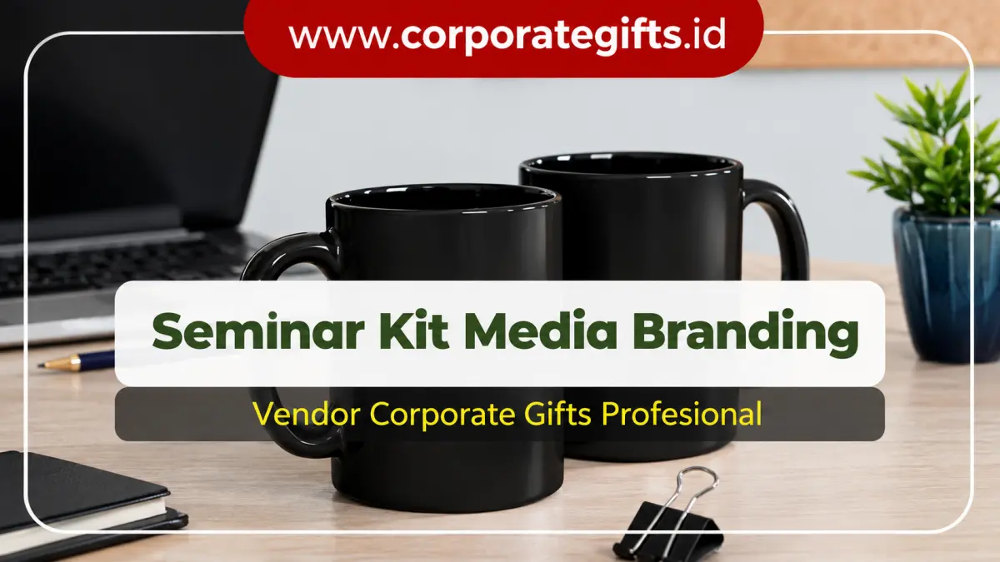

Corporate Gifts ID - Seminar kit custom logo perusahaan adalah paket perlengkapan peserta acara seperti tote bag, tumbler, dan notebook yang dicetak khusus dengan logo serta palet warna brand sehingga berfungsi sebagai media promosi fisik jangka panjang. Karena dimanfaatkan secara berulang kali setelah acara selesai, logo perusahaan terus terlihat di ruang publik dan meningkatkan daya ingat audiens (brand recall) tanpa beban biaya iklan tambahan.
Poin Kunci Branding Seminar Kit:
- Media Promosi Pasif: Menghasilkan ribuan impresi visual harian saat peserta membawa tas atau botol minum ke tempat kerja.
- Investasi Sekali Pakai Manfaat Berkelanjutan: Biaya produksi dibayarkan satu kali saat acara, namun dampak branding bertahan berbulan-bulan.
- Fungsionalitas Tinggi: Pilih item yang benar-benar berguna seperti tumbler stainless dan buku catatan eksklusif.
- Konsistensi Visual: Standarisasi warna korporat (Pantone/CMYK) menjaga wibawa dan kredibilitas profesional brand.
Apa Itu Seminar Kit Custom Logo Perusahaan?
Seminar kit adalah rangkaian cenderamata fungsional yang dibagikan kepada peserta seminar, lokakarya (workshop), pelatihan internal, maupun konferensi bisnis berskala besar. Disebut sebagai custom karena setiap elemen produk di dalamnya dirancang dan diproduksi sesuai standar panduan identitas visual korporasi, mulai dari peletakan logo, gradasi warna resmi yayasan/perusahaan, hingga sematan slogan acara.
Komposisi paket paket seminar kit resmi umumnya memadukan wadah pembungkus utama berupa tas, media pencatat, wadah minum, serta identitas pengenal peserta seperti lanyard dan tali ID card. Semakin fungsional barang yang diberikan, semakin tinggi frekuensi pemakaian oleh peserta di luar arena kegiatan.
Mengapa Seminar Kit Custom Efektif untuk Branding Jangka Panjang?
Di tengah kejenuhan iklan di ranah digital (banner ads, sponsorship media sosial), cenderamata fisik berlogo menawarkan sentuhan emosional nyata yang tidak dapat digantikan oleh layar monitor. Berikut adalah empat alasan utama mengapa seminar kit berlogo sangat berdaya guna:
- Meningkatkan Visibilitas Brand: Logo perusahaan senantiasa terekspos di hadapan rekan kerja, keluarga, maupun masyarakat luas setiap kali produk digunakan.
- Menciptakan Pengalaman Positif (Positive Sensory Experience): Sentuhan material kanvas berkualitas atau permukaan stainless tumbler yang kokoh mencerminkan penghargaan tulus panitia terhadap peserta.
- Retensi Ingatan Jangka Panjang: Studi industri promosi menunjukkan bahwa 85% penerima merchandise mengingat nama institusi yang memberikan produk fungsional hingga lebih dari 12 bulan.
- Memperkuat Kredibilitas Institusi: Kerapian detail cetakan dan kemasan rapi memperlihatkan keseriusan tata kelola perusahaan di hadapan pemangku kepentingan (stakeholder).

Kombinasi tote bag, tumbler, dan notebook custom meningkatkan brand recall secara konsisten.
3 Produk Utama Seminar Kit Custom Logo Paling Populer
Untuk memastikan efisiensi anggaran dan efektivitas branding, perhatikan tiga produk inti yang terbukti paling sering dipertahankan dan dipakai kembali oleh peserta:
1. Tote Bag Kanvas atau Spunbond Berlogo
Tote bag berbahan kanvas tebal, drill, ataupun spunbond ramah lingkungan berfungsi sebagai "billboard berjalan". Ketika peserta membawanya saat berbelanja, bepergian ke kantor, atau beraktivitas santai, logo brand Anda langsung menjangkau khalayak luas tanpa biaya sewa ruang promosi luar ruang.
2. Tumbler Stainless Insulated Eksklusif
Botol minum berbahan stainless steel food grade (SUS 304) dengan isolasi hampa udara mampu menjaga suhu minuman panas maupun dingin hingga belasan jam. Diaplikasikan dengan teknik grafir laser presisi atau UV print timbul, tumbler ini kerap ditaruh di atas meja kerja kantor, memberikan eksposur brand yang konstan sepanjang hari kerja.
3. Notebook Hardcover dengan Identitas Brand
Buku agenda atau memo notebook berkover kulit sintetis PU menghadirkan kesan mewah dan eksekutif. Dilengkapi dengan pita pembatas halaman, karet pengunci, serta logo teknik deboss tanpa warna atau hot foil stamping emas, notebook menjadi sahabat setia eksekutif saat rapat penting dan evaluasi proyek.
Tabel Perbandingan Produk Seminar Kit untuk Branding
Berikut matriks perbandingan antara jenis produk, karakteristik bahan, metode cetak logo, serta kontribusi nilai strategisnya terhadap branding perusahaan:
| Kategori Produk | Pilihan Bahan Baku | Teknik Branding Logo | Nilai Strategis Branding |
|---|---|---|---|
| Tote Bag Promosi | Kanvas premium, blacu halus, spunbond tebal | Sablon manual presisi, DTF full color | Mobilitas tinggi di area publik, jangkauan eksposur luas |
| Tumbler Eksklusif | Stainless steel SUS 304, aksen serat bambu | Laser engraving tahan gores, UV print flatbed | Kesan prestisius, selalu diletakkan di meja kerja harian |
| Executive Notebook | Hardcover kulit sintetis PU, jilid spiral | Hot foil stamping emas/perak, blind deboss | Citra profesional saat rapat formal dan sesi seminar |
| Lanyard & Name Tag | Polyester tisu halus, leather id holder | Sublimasi warna penuh 2 sisi, cetak UV | Identitas visual instan yang tertangkap kamera dokumentasi |
Bagaimana Seminar Kit Custom Mendongkrak Brand Awareness?
Peningkatan kesadaran merek (brand awareness) melalui merchandise seminar kit berlangsung melalui mekanisme psikologis dan eksposur berulang:
- Prinsip Resiprositas (Reciprocity Norm): Saat menerima souvenir bernilai guna tinggi, audiens secara psikologis terdorong memiliki pandangan hangat dan loyal terhadap penyelenggara.
- Konsistensi Identitas Visual: Keselarasan palet warna pada tas, buku catatan, dan pulpen menancapkan citra perusahaan yang rapi dan terorganisir dengan matang.
- Jangkauan Organik (Passive Word-of-Mouth): Desain merchandise yang estetis memancing peserta untuk mengunggah foto paket seminar kit ke akun LinkedIn atau Instagram Story mereka, memperluas jangkauan brand secara cuma-cuma.
5 Tips Memilih Seminar Kit Custom Logo yang Tepat Sasaran
Agar pengeluaran anggaran perusahaan menghasilkan laba atas investasi (ROI) yang optimal, perhatikan lima langkah strategis berikut:
- Identifikasi Profil Demografis Peserta: Sesuaikan pilihan barang dengan latar belakang audiens (misal: flashdisk kartu atau mouse pad untuk peserta bidang teknologi; tumbler eksklusif untuk jajaran manajerial).
- Pilih Barang yang Bernilai Pakai Nyata: Hindari barang pajangan murahan yang rawan berakhir di tempat sampah setelah acara usai.
- Sertakan Master Logo Berformat Vector: Kirimkan file logo dalam format
.AI,.EPS, atau.PDFuntuk memastikan hasil cetak grafir atau sablon tajam tanpa pixelasi. - Verifikasi Sampel Fisik (Mockup Approval): Mintalah preview visual digital atau sampel fisik sebelum pesanan ratusan unit dicetak secara massal.
- Alokasikan Waktu Produksi yang Proporsional: Siapkan pesanan minimal 3 hingga 4 pekan sebelum hari acara agar proses pengerjaan dan quality check berjalan tanpa terburu-buru.
Kesimpulan & Rekomendasi Solusi Pengadaan
Mengintegrasikan seminar kit custom logo ke dalam agenda acara korporat bukan sekadar tradisi seremonial, melainkan taktik pemasaran terukur untuk mengunci perhatian dan loyalitas pelanggan dalam jangka panjang. Mulai dari tote bag harian, tumbler tahan karat, hingga notebook kulit, setiap benda fisik merupakan duta merek yang bekerja tanpa henti bagi reputasi bisnis Anda.
Percayakan kurasi dan pencetakan cenderamata acara Anda kepada vendor profesional yang memiliki standardisasi mutu ketat serta komitmen waktu pengiriman yang teruji.